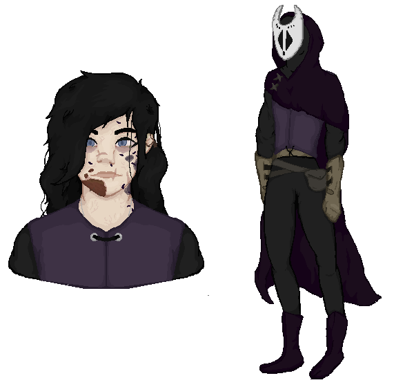
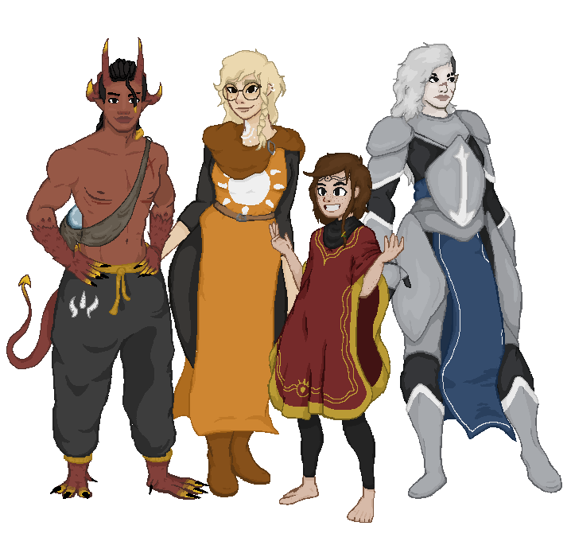
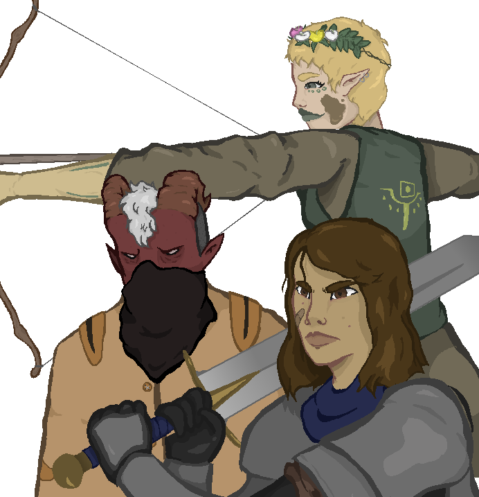
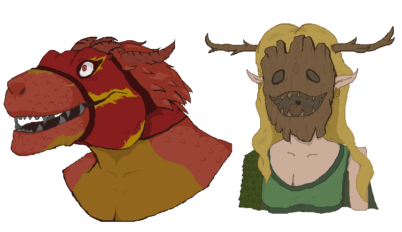
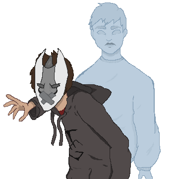

The Cult Wars
The Cult Wars Project is a complex project that expands across multiple forms
of media, revolving around a fantasy world in which cults have taken over society.
Originally started off as a Dungeons & Dragons campaign concept my freshman year of high school,
The Cult Wars Project is a fantasy world that I plan to expand into multiple forms of media
such as animation, video games, graphic novels, and music.
The Cult Wars Project has provided a great platform to practice writing, world planning, and character design.
The Kerathre
A indie trun based RPG that tells the story of Kerath
Kerath is a young orphan that is taken in my an evil diety that is trying to currupt her
As the game goes on you can decide whether Kerath fights for herself or gives into her currupt onlooker.
(I have the whole story writen out and learned RPG Maker MV in preperation.)

Erita & Asarith Arc
The Erita & Asarith arc is planned to be an animated series
that revolves around our two main characters Erita and Asarith
as they try to solve the mystery of the star cult.
(So far I have the entire first season planned and written out along with currently working on the pilot)

Rise of The Cult Wars
Rise of The Cult Wars is an ongoing Dungeons and Dragons campaign that I run every summer.
This campaign tells the story of what happens after the Star Cult is defeated.
The players of my campaign are full control of changing the lore of The Cult Wars.
(I've run three sessions of this campaign, with my group onlt scratching the surface of what I have planned.)

The Theives of Therinhood
This is a computer board game set in the world of The Cult Wars.
In this board game you follow a gang of theives trying to survive during the cult wars.
The story doesn't play any huge part in the lore of the world, but instead shows how everyday life is for someone in this fantasy world.
(I have all of the characters fleshed out and the main plot of the story written out.)

The Shaman
The Shaman is graphic novel I have planned that is far in the future.
The story revloves around Evan Redford and his ghost sidekick Jeremy Howell
as they solve the mysteries of their Kerathre heritage as they travel through the ghost world and the mortal plain.
(I have some art drawn up and and concepts of comic)
